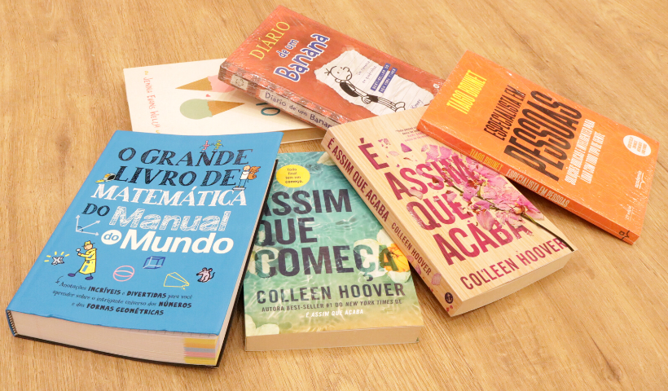
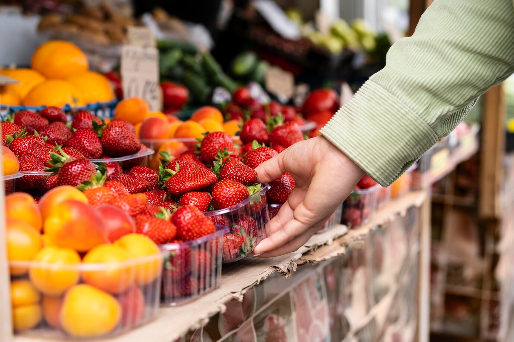
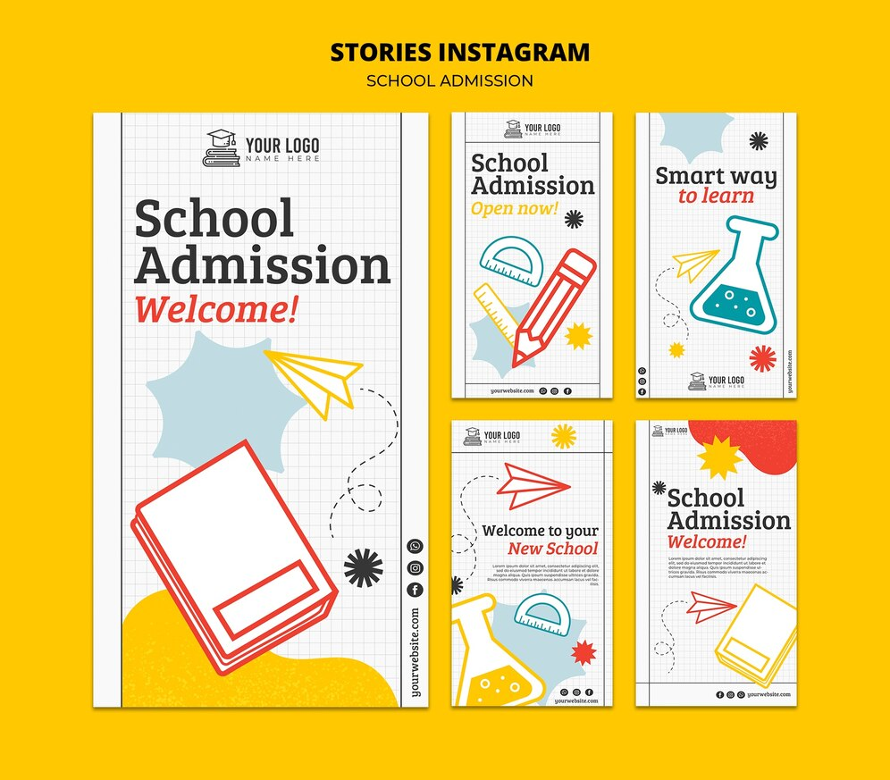

Meus projetos

Minha Biblioteca: Livros AluraBooks
Este projeto é uma página web que apresenta uma lista dos livros, que vão ajudar a melhorar suas tecnicas de programação de códicos.

Projeto agrinho 2024-Fruticultura
Este projeto é parecido com um estudos sobre a fruticultura e suas caracteriticas e, aborda também um pouco sobre a fruticultura no brasil.

Explorando um universo de FlashCards para ajudar a memorizar cartas para fins estudantins
Este projeto tem o objetivo de ajudar estudantes a melhorar a sua memorizção na hora de estudar para uma prova/concurso. Facilitando as horas de estudos e muito estudantes.